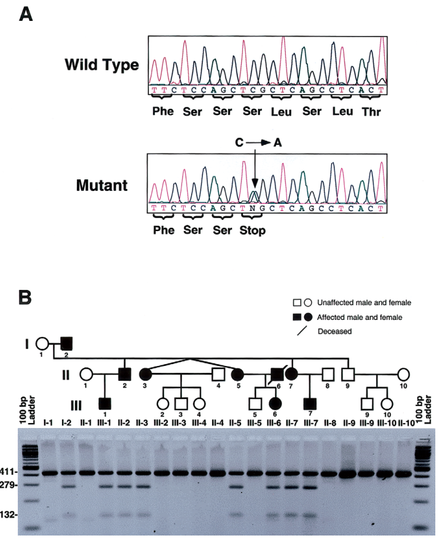

Tooth and Nail Syndrome (Witkop Syndrome; Hypodontia–Nail Dysplasia) — Disease Characteristics Research Report
Executive summary
Tooth and Nail Syndrome (TNS), also called Witkop syndrome, is a rare, primarily autosomal dominant ectodermal dysplasia characterized by congenital tooth agenesis (hypodontia/oligodontia) and nail dysplasia, with typically normal sweating and minimal hair involvement. The strongest primary molecular evidence links TNS to heterozygous loss-of-function variants in MSX1, including a canonical nonsense variant MSX1 c.605C>A (p.Ser202Ter; “S202X”) that cosegregates with disease in a multigeneration pedigree and is supported by developmental biology and mouse model parallels. (jumlongras2001anonsensemutation pages 4-7, jumlongras2001anonsensemutation pages 1-2, jumlongras2001anonsensemutation media 0569dd8f)
A 2024 narrative review of tooth agenesis reiterates MSX1 as a principal gene and explicitly maps Witkop-type ectodermal dysplasia (OMIM 189500) to autosomal dominant MSX1. (cammaratascalisi2024maingeneticentities pages 1-2)
Table (click to expand)
| Topic | Key facts | Suggested ontology terms | Key references / evidence |
|---|---|---|---|
| Disease definition & synonyms | Rare hereditary ectodermal dysplasia primarily affecting teeth and nails; characterized by congenital tooth agenesis/hypodontia or oligodontia plus nail dysplasia. Common synonyms: Witkop syndrome, tooth-and-nail syndrome (TNS), hypodontia–nail dysplasia syndrome, Witkop tooth-and-nail syndrome. Disease-level information is derived mainly from aggregated case reports/families and review resources, not EHR-scale datasets. (altugatac2008witkoptoothand pages 1-2, memarpour2011witkoptoothand pages 1-3, devadas2005witkoptoothand pages 1-3) | MONDO: not confidently identified from available context; HPO candidates include Hypodontia HP:0000677, Oligodontia HP:0000676, Abnormality of nails HP:0001597 | Altug-Atac & Iseri 2008, Angle Orthod 78:370-380, DOI: 10.2319/100406-403.1, https://doi.org/10.2319/100406-403.1 (altugatac2008witkoptoothand pages 1-2); Memarpour & Shafiei 2011, Pediatr Dermatol 28:281-285, DOI: 10.1111/j.1525-1470.2010.01198.x, https://doi.org/10.1111/j.1525-1470.2010.01198.x (memarpour2011witkoptoothand pages 1-3) |
| Inheritance | Usually autosomal dominant with variable expressivity; family pedigrees show vertical transmission across generations. (altugatac2008witkoptoothand pages 1-2, memarpour2011witkoptoothand pages 1-3, jumlongras2001anonsensemutation pages 1-2, cammaratascalisi2024maingeneticentities pages 1-2, jumlongras2001anonsensemutation media 0569dd8f) | HPO: Autosomal dominant inheritance HP:0000006; Variable expressivity HP:0003828 | Jumlongras et al. 2001, Am J Hum Genet 69:67-74, DOI: 10.1086/321271, https://doi.org/10.1086/321271 (jumlongras2001anonsensemutation pages 1-2, jumlongras2001anonsensemutation media 0569dd8f); Cammarata-Scalisi et al. 2024, Clin Oral Investig 29:9, DOI: 10.1007/s00784-024-05941-7, https://doi.org/10.1007/s00784-024-05941-7 (cammaratascalisi2024maingeneticentities pages 1-2) |
| Causal gene & key pathogenic variant | Canonical causal gene from primary evidence: MSX1 (OMIM gene cited in review context as 142983). Landmark family study identified heterozygous c.605C>A, p.Ser202Ter (S202X) nonsense variant in exon 2/homeodomain; variant cosegregated with disease and was absent from 132 control chromosomes. Evidence type: human familial linkage + segregation + sequencing, supported by mouse model phenotype parallels. (jumlongras2001anonsensemutation pages 7-8, jumlongras2001anonsensemutation pages 4-7, jumlongras2001anonsensemutation pages 1-2, cammaratascalisi2024maingeneticentities pages 1-2) | HGNC gene: MSX1; Sequence ontology idea: nonsense_variant; HPO: Abnormality of the dentition HP:0000164 | Jumlongras et al. 2001, Am J Hum Genet 69:67-74, DOI: 10.1086/321271, https://doi.org/10.1086/321271 (jumlongras2001anonsensemutation pages 7-8, jumlongras2001anonsensemutation pages 4-7); 2024 summary review confirms MSX1 → Witkop type ED3 (AD) (cammaratascalisi2024maingeneticentities pages 1-2) |
| Core phenotype: teeth | Congenitally missing primary and/or permanent teeth; reported range in one pedigree 11-28 missing permanent teeth. Frequently absent teeth reported across case literature include mandibular incisors, second molars, maxillary canines/incisors. Remaining teeth may be small, widely spaced, conical/narrow-crowned; retained primary teeth are common. (altugatac2008witkoptoothand pages 1-2, memarpour2011witkoptoothand pages 1-3, devadas2005witkoptoothand pages 1-3, jumlongras2001anonsensemutation pages 2-4, jumlongras2001anonsensemutation media 0569dd8f) | HPO: Hypodontia HP:0000677; Oligodontia HP:0000676; Conical tooth HP:0000698; Widely spaced teeth HP:0000687; Retained primary teeth HP:0006335 | Devadas et al. 2005, Int J Paediatr Dent 15:364-369, DOI: 10.1111/j.1365-263x.2005.00647.x, https://doi.org/10.1111/j.1365-263x.2005.00647.x (devadas2005witkoptoothand pages 1-3); Memarpour & Shafiei 2011 (memarpour2011witkoptoothand pages 1-3); Jumlongras et al. 2001 (jumlongras2001anonsensemutation pages 2-4) |
| Core phenotype: nails | Fingernail and toenail dysplasia, often more severe in toenails; nails may be thin, brittle, slow-growing, spoon-shaped (koilonychia), rigid, with onychorrhexis/longitudinal ridging. Nail findings are often most obvious in childhood and may improve with age. (altugatac2008witkoptoothand pages 1-2, memarpour2011witkoptoothand pages 1-3, devadas2005witkoptoothand pages 1-3, arora2016witkopssyndromea pages 1-3, jumlongras2001anonsensemutation pages 1-2, jumlongras2001anonsensemutation media 0569dd8f) | HPO: Nail dysplasia HP:0002164; Koilonychia HP:0001802; Onychorrhexis HP:0033863; Slow-growing nails HP:0008388 | Altug-Atac & Iseri 2008 (altugatac2008witkoptoothand pages 1-2); Arora et al. 2016, J Oral Biol Craniofac Res 6:79-81, DOI: 10.1016/j.jobcr.2015.07.003, https://doi.org/10.1016/j.jobcr.2015.07.003 (arora2016witkopssyndromea pages 1-3) |
| Other ectodermal features | Hair is usually normal or only mildly affected (fine/thin hair may occur); sweat gland function is typically normal, helping distinguish TNS from hypohidrotic ectodermal dysplasia. (altugatac2008witkoptoothand pages 1-2, memarpour2011witkoptoothand pages 1-3, devadas2005witkoptoothand pages 1-3, jumlongras2001anonsensemutation pages 2-4) | HPO: Normal sweating not usually encoded; possible phenotype if present: Sparse hair HP:0008070 | Memarpour & Shafiei 2011 (memarpour2011witkoptoothand pages 1-3); Devadas et al. 2005 (devadas2005witkoptoothand pages 1-3) |
| Onset & course | Congenital/developmental disorder. Nail abnormalities may be noticed at birth or early childhood; diagnosis often becomes clearer around 4-5 years when missing primary/permanent teeth are recognized radiographically/clinically. Course is lifelong, but nail severity may lessen with age; dental agenesis is non-progressive once established. (memarpour2011witkoptoothand pages 1-3, devadas2005witkoptoothand pages 1-3, jumlongras2001anonsensemutation pages 1-2) | HPO: Congenital onset HP:0003577; Childhood onset HP:0011463 | Devadas et al. 2005 (devadas2005witkoptoothand pages 1-3); Jumlongras et al. 2001 (jumlongras2001anonsensemutation pages 1-2) |
| Prevalence estimates reported | Published estimates in case/review literature vary: commonly cited ~1-2 per 10,000 births/newborns; one case report cites ~1 in 100,000 live births. These figures appear to be literature-derived estimates rather than registry-based epidemiology, so precision is uncertain. (altugatac2008witkoptoothand pages 1-2, memarpour2011witkoptoothand pages 1-3, devadas2005witkoptoothand pages 1-3, arora2016witkopssyndromea pages 1-3) | No specific ontology term | Altug-Atac & Iseri 2008 (1-2/10,000) (altugatac2008witkoptoothand pages 1-2); Memarpour & Shafiei 2011 (1-2/10,000) (memarpour2011witkoptoothand pages 1-3); Arora et al. 2016 (1/100,000) (arora2016witkopssyndromea pages 1-3) |
| Diagnostic approach | Diagnosis is primarily clinical + dental radiography + family history, with confirmation by molecular testing of MSX1 when available. Panoramic radiography/OPG documents tooth agenesis; pedigree analysis supports AD inheritance. Differential diagnosis includes Fried tooth-and-nail syndrome, trichoonychodental syndrome, and Clouston syndrome. (bhardwaj2023toothandnail pages 1-2, altugatac2008witkoptoothand pages 1-2, bhardwaj2023toothandnail pages 2-3, jumlongras2001anonsensemutation media 0569dd8f) | HPO: Family history not a phenotype; possible MAXO ideas for downstream curation: genetic counseling/testing terms | Bhardwaj 2023 case report (clinical exam + OPG) (bhardwaj2023toothandnail pages 1-2, bhardwaj2023toothandnail pages 2-3); Altug-Atac & Iseri 2008 (altugatac2008witkoptoothand pages 1-2) |
| Management / real-world implementation | No disease-specific pharmacotherapy. Real-world care is multidisciplinary dental rehabilitation: preventive dental care, space management/orthodontics, prosthodontics, retention of primary teeth when useful to preserve alveolar bone, and implants after growth completion in selected patients; simple nail care and psychosocial support are recommended. A 2023 familial case series reported surgical/prosthetic rehabilitation using zygomatic implants with up to 15-year follow-up (identified in search results, full text not retrieved here). (bhardwaj2023toothandnail pages 1-2, devadas2005witkoptoothand pages 5-6, bhardwaj2023toothandnail pages 2-3) | MAXO suggestions for downstream use: dental prosthesis placement, orthodontic treatment, genetic counseling; HPO impact terms may include Abnormality of dental occlusion HP:0000689 | Devadas et al. 2005 (preventive/prosthetic strategy) (devadas2005witkoptoothand pages 5-6); Bhardwaj 2023 (multidisciplinary care, nail care, counseling) (bhardwaj2023toothandnail pages 2-3) |
| Recent developments / latest research | Disease-specific 2023-2024 primary TNS literature appears sparse. A 2024 review on tooth agenesis reaffirms MSX1 as the gene for Witkop-type ectodermal dysplasia (AD). Broader mechanistic work remains relevant: MSX1 developmental role and earlier molecular proof remain the main authoritative evidence base. (cammaratascalisi2024maingeneticentities pages 1-2) | HGNC: MSX1; MONDO placeholder pending confirmation | Cammarata-Scalisi et al. 2024, Clin Oral Investig 29:9, DOI: 10.1007/s00784-024-05941-7, https://doi.org/10.1007/s00784-024-05941-7 (cammaratascalisi2024maingeneticentities pages 1-2) |
Table: This table compiles the core disease facts for Tooth and Nail Syndrome (Witkop syndrome), including inheritance, MSX1 molecular evidence, key phenotypes, onset, prevalence estimates, and practical diagnostic/management points. It is designed as a compact reference for knowledge-base curation and evidence mapping.
1. Disease information
1.1 Overview (what is the disease?)
TNS/Witkop syndrome is an ectodermal dysplasia phenotype dominated by two organ systems: (i) dentition (congenitally missing teeth, often with microdontia and conical crowns) and (ii) nails (thin/brittle/slow-growing and sometimes spoon-shaped). It is typically non–life-limiting but has substantial functional, esthetic, and psychosocial impact because oligodontia affects chewing, speech, and facial/dental appearance. (devadas2005witkoptoothand pages 5-6, memarpour2011witkoptoothand pages 1-3)
1.2 Key identifiers
- OMIM (disease): Tooth and Nail Syndrome / Witkop syndrome MIM 189500 (reported in the primary genetics paper context and reiterated in the 2024 review). (jumlongras2001anonsensemutation pages 7-8, cammaratascalisi2024maingeneticentities pages 1-2)
- OMIM (gene): MSX1 OMIM 142983 (from 2024 review excerpt). (cammaratascalisi2024maingeneticentities pages 1-2)
- MONDO / Orphanet / ICD / MeSH: Not retrievable from the provided full-text context in this run (should be added via direct OMIM/Orphanet/MONDO lookups in a subsequent curation pass).
1.3 Synonyms and alternative names
- Witkop syndrome; Witkop tooth-and-nail syndrome (altugatac2008witkoptoothand pages 1-2, memarpour2011witkoptoothand pages 1-3)
- Tooth and nail syndrome (TNS) (altugatac2008witkoptoothand pages 1-2, jumlongras2001anonsensemutation pages 1-2)
- Hypodontia–nail dysplasia / hypodontia with nail dysgenesis (memarpour2011witkoptoothand pages 5-5, devadas2005witkoptoothand pages 1-3)
1.4 Evidence type (individual patients vs aggregated)
Most knowledge is derived from family studies and case reports, supplemented by targeted reviews of tooth agenesis genetics. (devadas2005witkoptoothand pages 5-6, memarpour2011witkoptoothand pages 1-3, cammaratascalisi2024maingeneticentities pages 1-2)
2. Etiology
2.1 Disease causal factors
Primary causal factor: germline genetic variants in MSX1, a homeobox transcription factor required for normal ectodermal appendage development. (jumlongras2001anonsensemutation pages 4-7, jumlongras2001anonsensemutation pages 1-2)
2.2 Genetic risk factors (causal variants)
MSX1 (HGNC: MSX1) is the canonical causal gene for dominantly inherited TNS.
Key pathogenic variant (landmark): * MSX1 c.605C>A (exon 2) → p.Ser202Ter (S202X), a heterozygous nonsense variant in the MSX1 homeodomain. * Evidence: linkage to the MSX1 locus and cosegregation with the phenotype across a three-generation pedigree; absent in 132 control chromosomes (allele frequency <0.01 in that screen). (jumlongras2001anonsensemutation pages 4-7, jumlongras2001anonsensemutation media 0569dd8f)
Inheritance: autosomal dominant with variable expressivity; a large pedigree is shown with molecular cosegregation, and an accompanying table summarizes affected individuals’ missing tooth counts and nail features. (jumlongras2001anonsensemutation pages 1-2, jumlongras2001anonsensemutation media 0569dd8f, jumlongras2001anonsensemutation media 40a94f6c)
2.3 Environmental risk factors / protective factors
No environmental risk or protective factors were supported by the retrieved evidence; TNS is treated as a developmental genetic disorder. (jumlongras2001anonsensemutation pages 1-2)
2.4 Gene–environment interactions
No gene–environment interaction evidence was identified in the retrieved corpus.
3. Phenotypes
3.1 Core phenotypes and suggested HPO terms
A. Dental phenotypes (symptoms/signs/physical manifestations) * Hypodontia / oligodontia (HP:0000677 / HP:0000676): congenitally missing teeth; in one molecularly confirmed family study, affected individuals had 11–28 missing permanent teeth. (jumlongras2001anonsensemutation pages 2-4, jumlongras2001anonsensemutation media 40a94f6c) * Conical tooth (HP:0000698) and microdontia/narrow crowns: frequently described in clinical case series. (memarpour2011witkoptoothand pages 1-3, devadas2005witkoptoothand pages 1-3) * Widely spaced teeth (HP:0000687) and retained primary teeth (HP:0006335): commonly noted, with retained deciduous teeth often functioning long-term. (altugatac2008witkoptoothand pages 1-2, devadas2005witkoptoothand pages 1-3) * Teeth most frequently absent in case literature: mandibular incisors, second molars, and maxillary canines/incisors (pattern-level statements across case reports). (altugatac2008witkoptoothand pages 1-2, memarpour2011witkoptoothand pages 1-3, devadas2005witkoptoothand pages 1-3)
B. Nail phenotypes (clinical signs) * Nail dysplasia (HP:0002164): thin, brittle, slow-growing nails; often more severe in toenails. (memarpour2011witkoptoothand pages 1-3, devadas2005witkoptoothand pages 1-3) * Koilonychia (HP:0001802): spoon-shaped nails commonly described. (altugatac2008witkoptoothand pages 1-2, memarpour2011witkoptoothand pages 1-3) * Onychorrhexis (HP:0033863) and longitudinal ridging: reported in case literature. (arora2016witkopssyndromea pages 1-3)
C. Other ectodermal features * Sweating typically normal and hair often normal or minimally affected; this helps distinguish TNS from hypohidrotic ectodermal dysplasia. (memarpour2011witkoptoothand pages 1-3, jumlongras2001anonsensemutation pages 2-4)
3.2 Age of onset, progression, frequency
- Onset: congenital/developmental. Nail findings can be noticeable early; dental agenesis becomes clinically evident as dentition develops and is confirmed radiographically. (devadas2005witkoptoothand pages 1-3)
- Course: tooth agenesis is static after development; nail abnormalities may be more evident in childhood and can improve with age. (altugatac2008witkoptoothand pages 1-2, jumlongras2001anonsensemutation pages 1-2)
- Frequency: quantitative phenotype frequencies across cohorts are not available; evidence is case- and pedigree-based. (devadas2005witkoptoothand pages 5-6, memarpour2011witkoptoothand pages 1-3)
3.3 Quality of life impact
While no standardized QoL instrument data were found, multiple reports emphasize functional/esthetic and psychosocial burden and the importance of multidisciplinary rehabilitation to improve quality of life. (altugatac2008witkoptoothand pages 1-2, devadas2005witkoptoothand pages 5-6)
4. Genetic / molecular information
4.1 Causal gene(s)
- MSX1 is the primary causal gene for autosomal dominant TNS/Witkop syndrome. (jumlongras2001anonsensemutation pages 1-2, cammaratascalisi2024maingeneticentities pages 1-2)
4.2 Pathogenic variant(s)
- MSX1 c.605C>A (p.Ser202Ter; S202X) (nonsense; truncating) in exon 2/homeodomain; cosegregation and control-screen absence support pathogenicity. (jumlongras2001anonsensemutation pages 4-7, jumlongras2001anonsensemutation media 0569dd8f)
Variant class and predicted functional consequence: loss of function via truncation within the DNA-binding homeodomain; authors interpret the phenotype as consistent with haploinsufficiency. (jumlongras2001anonsensemutation pages 7-8, jumlongras2001anonsensemutation pages 4-7)
Population frequency: specific population database frequencies (e.g., gnomAD) were not available in the retrieved text; the original study reports absence in 132 control chromosomes. (jumlongras2001anonsensemutation pages 4-7)
4.3 Modifier genes, epigenetics, chromosomal abnormalities
No validated modifier genes or epigenetic findings specific to TNS were identified in the retrieved evidence.
5. Environmental information
No supported non-genetic environmental contributors were identified.
6. Mechanism / pathophysiology
6.1 Causal chain (current understanding)
- Germline heterozygous MSX1 loss-of-function (e.g., p.Ser202Ter) reduces functional MSX1 transcription factor dosage. (jumlongras2001anonsensemutation pages 4-7)
- MSX1 is a developmental regulator in craniofacial/dental mesenchyme; disruption impairs epithelial–mesenchymal interactions required for tooth development, producing congenital tooth agenesis. (altugatac2008witkoptoothand pages 1-2, jumlongras2001anonsensemutation pages 1-2)
- MSX1 is also implicated in nail unit development; in supporting mouse genetic evidence discussed by the authors, Msx1 knockout mice show tooth agenesis and defective/thinner nail plates, paralleling the human combined tooth–nail phenotype. (jumlongras2001anonsensemutation pages 1-2)
6.2 Pathways and processes
Direct pathway-level annotations (e.g., specific signaling cascades) were not provided in the TNS-focused clinical genetics excerpts; the mechanistic evidence in this corpus is primarily developmental-genetic (transcription factor dosage affecting organogenesis). (jumlongras2001anonsensemutation pages 1-2)
Suggested GO biological process terms (inference-level, not directly asserted in text): tooth development/odontogenesis; epithelial–mesenchymal signaling.
Cell types (suggested CL terms, inference-level): neural crest–derived craniofacial mesenchyme; dental mesenchyme; nail bed mesenchyme.
7. Anatomical structures affected
7.1 Organ/tissue level
- Teeth (dentition; jaw/oral cavity) and nails (nail unit of fingers/toes) are the primary affected structures. (memarpour2011witkoptoothand pages 1-3, devadas2005witkoptoothand pages 1-3)
Suggested UBERON terms (curation suggestions): tooth; nail; oral cavity.
8. Temporal development
- Onset: congenital; often recognized in early childhood when dentition anomalies become apparent. (devadas2005witkoptoothand pages 1-3)
- Course: lifelong; nails may improve; dentition anomalies require staged long-term dental management. (altugatac2008witkoptoothand pages 1-2, devadas2005witkoptoothand pages 5-6)
9. Inheritance and population
9.1 Inheritance pattern
- Autosomal dominant, variable expressivity; demonstrated in multigeneration pedigrees and supported by the MSX1 S202X family study. (jumlongras2001anonsensemutation pages 1-2, jumlongras2001anonsensemutation media 0569dd8f)
9.2 Epidemiology (statistics)
Robust registry-based prevalence/incidence data were not identified. Available figures are literature estimates from case reports: * ~1–2 per 10,000 births/newborns (reported in multiple case-based sources). (altugatac2008witkoptoothand pages 1-2, memarpour2011witkoptoothand pages 1-3, devadas2005witkoptoothand pages 1-3) * ~1 per 100,000 live births (reported in one case report; demonstrates uncertainty/heterogeneity in published estimates). (arora2016witkopssyndromea pages 1-3)
10. Diagnostics
10.1 Clinical tests
- Dental clinical exam + panoramic radiography (OPG) to document agenesis patterns. (bhardwaj2023toothandnail pages 1-2, devadas2005witkoptoothand pages 1-3)
- Nail physical examination (thin/brittle/koilonychia). (altugatac2008witkoptoothand pages 1-2, memarpour2011witkoptoothand pages 1-3)
10.2 Genetic testing
- Targeted sequencing of MSX1 (or broader tooth agenesis/ectodermal dysplasia panels; not explicitly enumerated in retrieved texts) can confirm diagnosis in families consistent with AD TNS. Molecular confirmation with segregation is exemplified by MSX1 S202X testing in the landmark pedigree. (jumlongras2001anonsensemutation pages 4-7, jumlongras2001anonsensemutation media 0569dd8f)
10.3 Differential diagnosis
Reported differentials include: * Fried tooth-and-nail syndrome (noted as clinically similar in dental literature) (arora2016witkopssyndromea pages 1-3) * Trichoonychodental (TOD) syndrome and Clouston syndrome (distinguished by hair/palmoplantar findings). (altugatac2008witkoptoothand pages 1-2, bhardwaj2023toothandnail pages 2-3)
11. Outcome / prognosis
TNS is generally compatible with normal lifespan. The dominant morbidity is dental functional impairment and esthetic/psychosocial burden; hence, long-term outcomes depend on access to coordinated dental and prosthetic care. (devadas2005witkoptoothand pages 5-6, altugatac2008witkoptoothand pages 1-2)
12. Treatment
12.1 Pharmacotherapy
No disease-modifying pharmacotherapy is supported by the retrieved evidence.
12.2 Dental and interventional management (real-world implementation)
Evidence-supported management principles include: * Preventive dental care and early care planning. (devadas2005witkoptoothand pages 5-6) * Orthodontic/space management and staged rehabilitation for function/esthetics. (altugatac2008witkoptoothand pages 1-2, devadas2005witkoptoothand pages 5-6) * Retention of primary teeth when permanent successors are absent to preserve alveolar bone height for later rehabilitation. (bhardwaj2023toothandnail pages 1-2, arora2016witkopssyndromea pages 1-3) * Prosthodontics (e.g., fixed partial dentures) and consideration of implants after growth completion to reduce need for bone augmentation. (devadas2005witkoptoothand pages 5-6) * Nail care (lubrication, trimming/smoothing to reduce breakage/fungal complications) and genetic counseling. (bhardwaj2023toothandnail pages 2-3)
MAXO term suggestions (curation): orthodontic treatment; dental prosthesis placement; dental implant placement; genetic counseling.
12.3 Clinical trials
No interventional clinical trials specific to TNS/MSX1 were identified in the retrieved clinical trials search.
13. Prevention
Because TNS is genetic/developmental, prevention is primarily: * Genetic counseling and family-based risk assessment (implied by management recommendations). (bhardwaj2023toothandnail pages 2-3) No environmental primary prevention or vaccination is applicable.
14. Other species / natural disease
No naturally occurring veterinary analogs were identified in the retrieved evidence.
15. Model organisms
The TNS molecular genetics paper discusses mouse Msx1 knockout phenotypes as supportive evidence for shared tooth and nail developmental requirements (tooth agenesis and thinner/defective nail plates). (jumlongras2001anonsensemutation pages 1-2)
Recent developments (prioritized 2023–2024)
2023: clinical reporting and management emphasis
A 2023 case report reiterates the clinical picture (tooth agenesis and nail dysplasia, minimal sweating/hair involvement) and emphasizes multidisciplinary management and dental radiographic confirmation; it also reports extreme oligodontia (example: 18 missing permanent teeth) as part of the phenotypic range. (bhardwaj2023toothandnail pages 1-2, bhardwaj2023toothandnail pages 2-3)
2024: genetics of tooth agenesis review consolidation
A 2024 review on tooth agenesis genetics explicitly lists MSX1 as associated with “ED 3, Witkop type” (OMIM 189500) and autosomal dominant inheritance, reflecting ongoing consensus in the field regarding the MSX1–Witkop/TNS relationship. (cammaratascalisi2024maingeneticentities pages 1-2)
Expert opinion / analysis (evidence-grounded)
Across authoritative dental/dermatologic case literature, there is consistent emphasis that TNS care is not drug-based but relies on early, staged, multidisciplinary rehabilitation to address function, esthetics, and psychosocial outcomes (orthodontics + prosthodontics, with implant timing aligned to growth). (altugatac2008witkoptoothand pages 1-2, devadas2005witkoptoothand pages 5-6)
Key data extracted from primary study figure/table evidence
The pedigree and clinical feature table from the landmark MSX1 study provide patient-level structured evidence for: * Autosomal dominant segregation of tooth agenesis and nail dysplasia with a truncating MSX1 variant (pedigree + restriction analysis). (jumlongras2001anonsensemutation media 0569dd8f) * Individual-level counts of congenitally missing permanent teeth and nail involvement across family members (table). (jumlongras2001anonsensemutation media 40a94f6c)
Notable limitations of this report (due to available full-text evidence)
- MONDO/Orphanet/MeSH/ICD identifiers could not be confirmed from the retrieved full texts.
- 2023–2024 primary research specifically on TNS is sparse in the retrieved set; the main 2024 contribution captured here is a genetics review consolidation rather than new variant discovery.
- No robust population epidemiology (registry-based prevalence/incidence) or standardized QoL metrics were found.
References (with publication dates and URLs where available)
- Jumlongras D et al. Jul 2001. American Journal of Human Genetics 69(1):67–74. “A nonsense mutation in msx1 causes witkop syndrome.” DOI/URL: https://doi.org/10.1086/321271 (jumlongras2001anonsensemutation pages 4-7, jumlongras2001anonsensemutation pages 1-2)
- Altug-Atac AT, Iseri H. Mar 2008. The Angle Orthodontist 78(2):370–380. DOI/URL: https://doi.org/10.2319/100406-403.1 (altugatac2008witkoptoothand pages 1-2)
- Devadas S et al. Sep 2005. International Journal of Paediatric Dentistry 15(5):364–369. DOI/URL: https://doi.org/10.1111/j.1365-263x.2005.00647.x (devadas2005witkoptoothand pages 5-6, devadas2005witkoptoothand pages 1-3)
- Memarpour M, Shafiei F. May 2011. Pediatric Dermatology 28(3):281–285. DOI/URL: https://doi.org/10.1111/j.1525-1470.2010.01198.x (memarpour2011witkoptoothand pages 1-3)
- Arora V et al. Jan 2016. Journal of Oral Biology and Craniofacial Research 6(1):79–81. DOI/URL: https://doi.org/10.1016/j.jobcr.2015.07.003 (arora2016witkopssyndromea pages 1-3)
- Cammarata-Scalisi F et al. Dec 2024. Clinical Oral Investigations 29(1):9. DOI/URL: https://doi.org/10.1007/s00784-024-05941-7 (cammaratascalisi2024maingeneticentities pages 1-2)
- Bhardwaj S. 2023. Tooth and nail syndrome—rare case report (journal metadata incomplete in retrieved text). (bhardwaj2023toothandnail pages 1-2, bhardwaj2023toothandnail pages 2-3)
References
-
(jumlongras2001anonsensemutation pages 4-7): Dolrudee Jumlongras, Marianna Bei, Jean M. Stimson, Wen-Fang Wang, Steven R. DePalma, Christine E. Seidman, Ute Felbor, Richard Maas, Jonathan G. Seidman, and Bjorn R. Olsen. A nonsense mutation in msx1 causes witkop syndrome. American journal of human genetics, 69 1:67-74, Jul 2001. URL: https://doi.org/10.1086/321271, doi:10.1086/321271. This article has 346 citations and is from a highest quality peer-reviewed journal.
-
(jumlongras2001anonsensemutation pages 1-2): Dolrudee Jumlongras, Marianna Bei, Jean M. Stimson, Wen-Fang Wang, Steven R. DePalma, Christine E. Seidman, Ute Felbor, Richard Maas, Jonathan G. Seidman, and Bjorn R. Olsen. A nonsense mutation in msx1 causes witkop syndrome. American journal of human genetics, 69 1:67-74, Jul 2001. URL: https://doi.org/10.1086/321271, doi:10.1086/321271. This article has 346 citations and is from a highest quality peer-reviewed journal.
-
(jumlongras2001anonsensemutation media 0569dd8f): Dolrudee Jumlongras, Marianna Bei, Jean M. Stimson, Wen-Fang Wang, Steven R. DePalma, Christine E. Seidman, Ute Felbor, Richard Maas, Jonathan G. Seidman, and Bjorn R. Olsen. A nonsense mutation in msx1 causes witkop syndrome. American journal of human genetics, 69 1:67-74, Jul 2001. URL: https://doi.org/10.1086/321271, doi:10.1086/321271. This article has 346 citations and is from a highest quality peer-reviewed journal.
-
(cammaratascalisi2024maingeneticentities pages 1-2): Francisco Cammarata-Scalisi, Colin E. Willoughby, Jinia R. El-Feghaly, Antonio Cárdenas Tadich, Maykol Araya Castillo, Shadi Alkhatib, Marwa Abd Elsalam Elsherif, Rabab K. El-Ghandour, Riccardo Coletta, Antonino Morabito, and Michele Callea. Main genetic entities associated with tooth agenesis. Clinical oral investigations, 29 1:9, Dec 2024. URL: https://doi.org/10.1007/s00784-024-05941-7, doi:10.1007/s00784-024-05941-7. This article has 8 citations and is from a domain leading peer-reviewed journal.
-
(altugatac2008witkoptoothand pages 1-2): Ayse T. Altug-Atac and Haluk Iseri. Witkop tooth and nail syndrome and orthodontics. The Angle orthodontist, 78 2:370-80, Mar 2008. URL: https://doi.org/10.2319/100406-403.1, doi:10.2319/100406-403.1. This article has 19 citations.
-
(memarpour2011witkoptoothand pages 1-3): Mahtab Memarpour and Fereshteh Shafiei. Witkop tooth and nail syndrome: a report of three cases in a family. Pediatric Dermatology, 28:281-285, May 2011. URL: https://doi.org/10.1111/j.1525-1470.2010.01198.x, doi:10.1111/j.1525-1470.2010.01198.x. This article has 21 citations and is from a peer-reviewed journal.
-
(devadas2005witkoptoothand pages 1-3): S. DEVADAS, B. VARMA, J. MUNGARA, T. JOSEPH, and T. R. SARASWATHI. Witkop tooth and nail syndrome: a case report. International journal of paediatric dentistry, 15 5:364-9, Sep 2005. URL: https://doi.org/10.1111/j.1365-263x.2005.00647.x, doi:10.1111/j.1365-263x.2005.00647.x. This article has 15 citations and is from a domain leading peer-reviewed journal.
-
(jumlongras2001anonsensemutation pages 7-8): Dolrudee Jumlongras, Marianna Bei, Jean M. Stimson, Wen-Fang Wang, Steven R. DePalma, Christine E. Seidman, Ute Felbor, Richard Maas, Jonathan G. Seidman, and Bjorn R. Olsen. A nonsense mutation in msx1 causes witkop syndrome. American journal of human genetics, 69 1:67-74, Jul 2001. URL: https://doi.org/10.1086/321271, doi:10.1086/321271. This article has 346 citations and is from a highest quality peer-reviewed journal.
-
(jumlongras2001anonsensemutation pages 2-4): Dolrudee Jumlongras, Marianna Bei, Jean M. Stimson, Wen-Fang Wang, Steven R. DePalma, Christine E. Seidman, Ute Felbor, Richard Maas, Jonathan G. Seidman, and Bjorn R. Olsen. A nonsense mutation in msx1 causes witkop syndrome. American journal of human genetics, 69 1:67-74, Jul 2001. URL: https://doi.org/10.1086/321271, doi:10.1086/321271. This article has 346 citations and is from a highest quality peer-reviewed journal.
-
(arora2016witkopssyndromea pages 1-3): Varuni Arora, Kaushal Kishor Agrawal, Apurva Mishra, and Anil Chandra. Witkop's syndrome: a case report. Journal of oral biology and craniofacial research, 6 1:79-81, Jan 2016. URL: https://doi.org/10.1016/j.jobcr.2015.07.003, doi:10.1016/j.jobcr.2015.07.003. This article has 10 citations.
-
(bhardwaj2023toothandnail pages 1-2): S Bhardwaj. Tooth and nail syndrome-a rare case report. Unknown journal, 2023.
-
(bhardwaj2023toothandnail pages 2-3): S Bhardwaj. Tooth and nail syndrome-a rare case report. Unknown journal, 2023.
-
(devadas2005witkoptoothand pages 5-6): S. DEVADAS, B. VARMA, J. MUNGARA, T. JOSEPH, and T. R. SARASWATHI. Witkop tooth and nail syndrome: a case report. International journal of paediatric dentistry, 15 5:364-9, Sep 2005. URL: https://doi.org/10.1111/j.1365-263x.2005.00647.x, doi:10.1111/j.1365-263x.2005.00647.x. This article has 15 citations and is from a domain leading peer-reviewed journal.
-
(memarpour2011witkoptoothand pages 5-5): Mahtab Memarpour and Fereshteh Shafiei. Witkop tooth and nail syndrome: a report of three cases in a family. Pediatric Dermatology, 28:281-285, May 2011. URL: https://doi.org/10.1111/j.1525-1470.2010.01198.x, doi:10.1111/j.1525-1470.2010.01198.x. This article has 21 citations and is from a peer-reviewed journal.
-
(jumlongras2001anonsensemutation media 40a94f6c): Dolrudee Jumlongras, Marianna Bei, Jean M. Stimson, Wen-Fang Wang, Steven R. DePalma, Christine E. Seidman, Ute Felbor, Richard Maas, Jonathan G. Seidman, and Bjorn R. Olsen. A nonsense mutation in msx1 causes witkop syndrome. American journal of human genetics, 69 1:67-74, Jul 2001. URL: https://doi.org/10.1086/321271, doi:10.1086/321271. This article has 346 citations and is from a highest quality peer-reviewed journal.
Artifacts
- Edison artifact artifact-00
